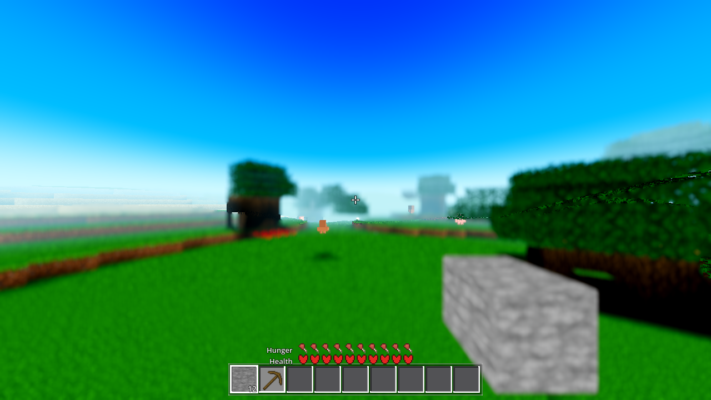
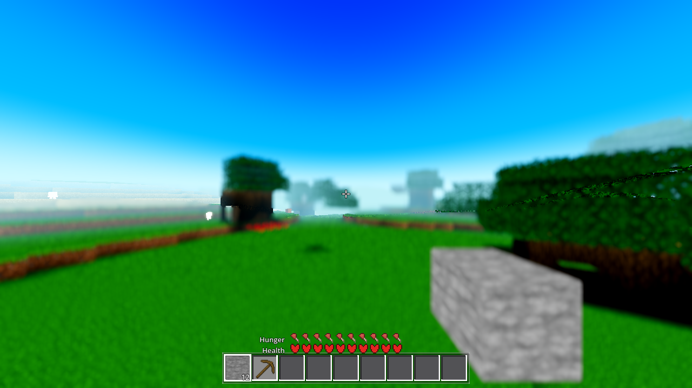

Run 2 (gates + evidence). Plan: plan.html (the five Run-1 answers). All gate logs in .scratch/AC-0445-*.log (repo root). Engine ~/tools/godot/godot 4.7.1, --path godot. Render under the fwdshot recipe (xvfb-run -a + VK_ICD_FILENAMES=…/lvp_icd.json + --rendering-driver vulkan).
| Gate | Run | Census | Result |
|---|---|---|---|
| G0 | --headless --quit | 0 SCRIPT / 0 SHADER | ok |
| SMOKE | battery player;interact;light;fluids;genhash | 0 / 0 | ok:true |
| genhash | AWECRAFT_LOGIC=genhash | 0 / 0 | 25/25 byte-identical (vs AC-0441 ref) |
| vflight (headless) | AWECRAFT_LOGIC=vflight | 0 / 0 | ok:true |
| vflight (render) | fwdshot, R4 | 0 / 0 | ok:true (fade 102/102) |
| ladder | AWECRAFT_LOGIC=ladder | 0 / 0 | ok:true (taxi_order_ok, band_a 20/20) |
| r16 | AWECRAFT_LOGIC=r16 | 0 / 0 | ok:true (taxi_monotone_ok) |
| brightslab / halo / starlighttest / lightstate | each AWECRAFT_LOGIC=… | 0 / 0 each | ok:true (lightstate: low_on_high_n 0, wash false) |
| boundary (r4) | AWECRAFT_LOGIC=boundary | 0 / 0 | ok:true |
| meshprobe (PROBE) | AWECRAFT_LOGIC=meshprobe | 0 / 0 | ok:true (match_rate 1.0, verts equal) |
| shaderforce (render) | fwdshot, R4 | 0 SHADER | ok:true (count 16, failed []) |
| perf r4 (POST, TIMING=1) | AWECRAFT_LOGIC=perf AWECRAFT_RADIUS=4 | 0 / 0 | enable cost ↓ (below) |
A pure +Y sweep (5×20 m = 100 m climb, flat x/z fixed) fires ZERO recenters. From vflight (headless):
"sweep":{ "recenter_delta":0, "smu_rearmed":false,
"hcache_grew":0, "lcache_grew":0, "free":true }
recenter_delta 0 = world.recenter_n unchanged over the 100 m climb; smu_rearmed false = the small-move window (_sm_move_until, set only inside recenter()) was not re-armed; hcache_grew / lcache_grew 0 = the hslab/low probe caches (fingerprints now without the player-Y slab) did not grow. A 16-block vertical move is free — no tiered walk, no probe-cache invalidation, no build-queue throttle.
A short +X walk streams NEW real-band columns. The no-partial-column census over every resident tier-0 column: each is PENDING (0 stamped slabs) or COMPLETE (every slab 0..top stamped) — never partial.
"census":{ "checked":41, "complete":41, "pending":0, "partial":0 }
"land": { "col_atomic_lands":182, "hslab_scoped_real_lands":0, "col_atomic_ok":true }
"walk": { "col_atomic_before":41, "col_atomic_after":182, "streamed_new":141 }
partial 0 = the regression this ticket kills (the user's "tower full of holes"). col_atomic_lands 182 = the column-atomic enable is live; hslab_scoped_real_lands 0 = NO per-slab real-band landings remain (tier 0 no longer uses the scoped hslab lane). 141 new columns streamed over the walk, all landed whole.
On a first-enable landing (no high showing before) the whole column takes a per-surface alpha ramp (u_fade 0→1, smoothstep, COL_FADE_MS=350, AWECRAFT_FADE_MS for A/B). Headless skips it (no pixels; this build's dummy server rejects every transparent render mode). Under the real renderer it RUNS:
# vflight (render, fwdshot R4)
"fade":{ "mode":"render", "started":102, "completed":102,
"max_ramp_ms":12083, "col_fade_ms":350, "ok":true }
started 102 / completed 102 = 102 columns first-enabled in the real renderer, ALL completed, none stuck. max_ramp_ms 12083 is REPORTED, not gated: the slow llvmpipe proxy runs frames of seconds, so completion is detected on a frame boundary (wall start→completion-detection is frame-granular, not the 350 ms ramp). The ramp itself is the A/B below.
AWECRAFT_TIMING=1)| field | before (per-slab) | after (column-atomic) | delta |
|---|---|---|---|
build_units | 406 | 55 | −86% (one column = one unit, not 24 slabs) |
build_ms (worker total) | 341 | 114 | −66% |
build_worker_n | 400 | 41 | fewer, bigger off-thread units |
build_worker p50/p95/max (ms) | 1 / 1 / 2 | 4 / 5 / 6 | each unit = a whole column (expected) |
frame p50 (ms) | 13 | 0 | the column lands in one atomic handoff, not 24 scattered |
frame p95 / max (ms) | 106 / 3971 | 103 / 4034 | ~unchanged (the boot storm, not the land) |
recenter_ms | 3 | 3 | unchanged |
col_deferred_in_footprint | 0 | 0 | fence holds (no fall-through) |
total_ms | 6583 | 5688 | −14% |
The column-atomic enable is faster: 86% fewer build units, 66% less worker time, and the median frame drops to 0 ms because a column lands in one handoff instead of 24 per-slab handoffs scattered across frames. Collision at the landing reuses the existing col_immediate/staged split (footprint bodies immediate, non-footprint staged ≤2 cols/frame, col_deferred_in_footprint stays 0).
fade ON (default 350 ms) — the world at the streaming edge, fade machinery active, no holes/black artifacts:

fade OFF (A/B, AWECRAFT_FADE_MS=0) — identical settled state (the ramp is 350 ms, long over by the 600-frame drain); proves the off path works (immediate enable, no fade):

The four chunk_lit_*_fade.gdshader variants (render_mode …, blend_mix) compile under the real Forward+ — shaderforce count went 12 → 16, failed [], 0 SHADER ERROR. (The plain blend keyword is rejected in this build; blend_mix is the Godot 4 standard alpha-blend mode — probe-verified.)
OS.has_feature("headless") returns false under --headless — the headless guard now uses DisplayServer.get_name() == "headless" (the reliable signal). (2) ShaderMaterial is RefCounted — the fade-mat teardown dropped the explicit .free() (a SCRIPT ERROR) for refcount drop. (3) the fade render_mode is blend_mix, not blend (the build rejects blend under BOTH the dummy and the real Vulkan server).godot/scenes/main.gd :626 / :643 still pass the 4th wy arg (world.recenter(flt.x, flt.z, true, flt.y)) — another session's dirty work. Exact needed change: drop the 4th arg at both sites (world.recenter(flt.x, flt.z, true)), then the deprecated no-op wy param on recenter() (world.gd:11558) can be deleted. Tree left in the work's state.player start [8.5,142,8.5] vs the actual [8.78,140.98,8.78] — byte-identical pre/post this change (AC-0441 == AC-0445), so it is not re-baselined here.core/fluid_anim*.gdshader) fade — those use per-bid fluid_anim_material, a separate lane (Q5 scope decision: not faded in P1).AWECRAFT_FADE_MS (350 default, 0 = off); no Settings row (display polish, not a user knob in P1).main.gd 4th-arg drop — fenced (another session's dirty file); reported above.Continuity: continuity.md. Standing values re-established in tasks/harness_data.yaml (ladder taxi_order_ok, shaderforce count 16, new vflight row) + harness_doc.py --render (HARNESS.md in sync, --check clean). ARCHITECTURE.md updated (build-order taxi-only + column-atomic, mesh-attach + fade, recenter X/Z-only).